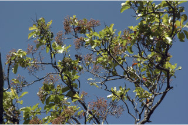
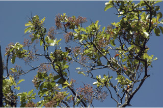

Small trees, up to 10 m tall.
10 ಮೀ. ಎತ್ತರದವರೆಗಿನ ಸಣ್ಣ ಮರಗಳು.
Small trees, up to 10 m tall.
சிறியமரங்கள், 10 மீ. உயரம் வரை வளரக்கூடியது.
Bark reddish brown, lenticellate; blaze pink.
ತೊಗಟೆ ಕೆಂಪು ಮಿಶ್ರಿತ ಕಂದು ಬಣ್ಣದಲ್ಲಿದ್ದು ವಾಯುವಿನಿಮಯ ಬೆಂಡು ರಂಧ್ರಗಳ ಸಮೇತವಿರುತ್ತವೆ; ಕಚ್ಚು ಮಾಡಿದ ಜಾಗ ನಸುಗೆಂಪು.
Bark reddish brown, lenticellate; blaze pink.
மரத்தின் பட்டை சிவப்பு ப்ரவுன் நிறமானது, பட்டைத்துளைகள் (லெண்டிசெல்லேட்) உடையது; உள்பட்டை பிங்க் நிறமானது.
Branchlets terete, lenticellate, glabrous.
ಕಿರುಕೊಂಬೆಗಳು ದುಂಡಾಗಿರುತ್ತವೆ, ವಾಯುವಿನಿಮಯ ಬೆಂಡು ರಂಧ್ರಗಳ ಸಮೇತವಿದ್ದು ರೋಮರಹಿತವಾಗಿರುತ್ತವೆ.
Branchlets terete, lenticellate, glabrous.
சிறியநுனிக்கிளைகள் குறுக்குவெட்டுத் தோற்றத்தில் வளையமானது, பட்டைத்துளைகள் (லெண்டிசெல்லேட்) உடையது, உரோமங்களற்றது.
Leaves simple, alternate, spiral, crowded at twig apex; stipule subulate, lateral, caducous and leaving scar; petiole 1.5-3.5 cm long, canaliculate above, glabrous; lamina 7-15.5 x 3.5-7.5 cm, elliptic to obovate, apex acuminate, often acumen twisted, base acute to rounded, margin entire, coriaceous, glabrous; midrib canaliculate above; secondary_nerves 7-11 pairs; tertiary_nerves broadly reticulate.
ಎಲೆಗಳು ಸರಳವಾಗಿದ್ದು ಪರ್ಯಾಯ ಮತ್ತು ಸುತ್ತು ಜೋಡನಾ ವ್ಯವಸ್ಥೆಯಲ್ಲಿದ್ದು ಕುಡಿಕೊಂಬೆಗಳ ತುದಿಯಲ್ಲಿ ಗುಂಪಾಗಿರುತ್ತವೆ; ಕಾವಿನೆಲೆಗಳು ದಬ್ಬಳದ ಆಕಾರ ಹೊಂದಿದ್ದು ಪಾರ್ಶ್ವದಲ್ಲಿದ್ದು ಉದುರಿದ ನಂತರ ಗುರುತುಗಳನ್ನು ಉಳಿಸುತ್ತವೆ;ತೊಟ್ಟು 1.5 ರಿಂದ 3.5 ಸೆಂ.ಮೀ.ವರೆಗಿನ ಉದ್ದವಿದ್ದು,ಮೇಲ್ಭಾಗದಲ್ಲಿ ಕಾಲುವೆಗೆರೆಯನ್ನು ಹೊಂದಿರುತ್ತದೆ ಮತ್ತು ರೋಮರಹಿತವಾಗಿರುತ್ತದೆ; ಪತ್ರಗಳು 7 -15.5 X 3.5–7.5 ಸೆಂ.ಮೀ. ಗಾತ್ರ, ಅಂಡವೃತ್ತದಿಂದ ಬುಗುರಿಯವರೆಗಿನ ಆಕಾರ ಹೊಂದಿದ್ದು,ಕ್ರಮೇಣ ಚೂಪಾಗುವ ಮಾದರಿಯ ತುದಿ ಹೊಂದಿದ್ದು ಹಲವು ಸಂದರ್ಭಗಳಲ್ಲಿ ಅಗ್ರ ತಿರುಚಿಕೊಂಡಿರುತ್ತದೆ,ಪತ್ರಗಳು ಚೂಪಾದುದರಿಂದ ದುಂಡಾದ ಬುಡ, ನಯವಾದ ಅಂಚು, ತೊಗಲನ್ನೋಲುವ ಮೇಲ್ಮೈ ಹೊಂದಿದ್ದು ರೋಮರಹಿತವಾಗಿರುತ್ತವೆ; ಮಧ್ಯನಾಳ ಪತ್ರದ ಮೇಲ್ಭಾಗದಲ್ಲಿ ಕಾಲುವೆಗೆರೆ ಸಮೇತವಿರುತ್ತದೆ;ಎರಡನೇ ದರ್ಜೆಯ ನಾಳಗಳು 7 ರಿಂದ 11 ಜೋಡಿಗಳಿರುತ್ತವೆ;ಮೂರನೇ ದರ್ಜೆಯ ನಾಳಗಳು ವಿಶಾಲ ಜಾಲಬಂಧ ನಾಳ ವಿನ್ಯಾಸದ ಮಾದರಿಯವು..
Leaves simple, alternate, spiral, crowded at twig apex; stipule subulate, lateral, caducous and leaving scar; petiole 1.5-3.5 cm long, canaliculate above, glabrous; lamina 7-15.5 x 3.5-7.5 cm, elliptic to obovate, apex acuminate, often acumen twisted, base acute to rounded, margin entire, coriaceous, glabrous; midrib canaliculate above; secondary_nerves 7-11 pairs; tertiary_nerves broadly reticulate.
இலைகள் தனித்தவை, மாற்றுஅடுக்கமானவை, சுழல் போல் அமைந்தது, சிறுகிளைகளின் நுனியில் இலைகள் கூட்டமாக மற்றும் நெருக்கமாக காணப்படும்; இலையடிச்செதில் மெல்லிய நீண்ட கூர்மையான நுனியுடையது, பக்கவாட்டில் காணப்படுபவை, எளிதில் உதிரக்கூடியவை மற்றும் தழும்புகளை ஏற்படுத்தவல்லது; இலைக்காம்பு 1.5-3.5 செ.மீ. நீளமானது, இலைக்காம்பு குறுக்குவெட்டுத் தோற்றத்தில் கேனாலிகுலேட், உரோமங்களற்றது; இலை அலகு 7-15.5 X 3.5-7.5 செ.மீ., நீள்வட்ட வடிவானது முதல் தலைகீழ் முட்டை வடிவானது, அலகின் நுனி அதிக்கூரியது, பொரும்பாலும் முனை திருகியது, அலகின் தளம் கூரியது முதல் வட்டமானது, அலகின் விளிம்பு முழுமையானது, கோரியேசியஸ், உரோமங்களற்றது; மையநரம்பு மேற்புறத்தில் அலகின் பரப்பைவிட பள்ளமானது; இரண்டாம் நிலை நரம்புகள் 7-11 ஜோடிகள்; மூன்றாம் நிலை நரம்புகள் அகன்ற வலைப்பின்னல் போன்றவை.
Inflorescence terminal corymbose; flowers subsessile, white.
ಪುಷ್ಪಮಂಜರಿಗಳು ತುದಿಯಲ್ಲಿನ ನೀಳಛತ್ರ ಮಾದರಿಯಲ್ಲಿರುತ್ತವೆ;ಹೂಗಳು ಉಪತೊಟ್ಟುಗಳನ್ನು ಹೊಂದಿದ್ದು ಬಿಳಿ ಬಣ್ಣದಲ್ಲಿರುತ್ತವೆ.
Inflorescence terminal corymbose; flowers subsessile, white.
மஞ்சரி தண்டின் நுனியில் காணப்படும் கோரியம்போஸ்; மலர்கள் மிகச்சிறிய காம்புடையது, வெள்ளை நிறமானது.
Drupe, globose, reddish-purple; seeds 2, compressed.
ಡ್ರೂಪ್ಗಳು ಗೋಳಾಕಾರದಲ್ಲಿದ್ದು ಕೆಂಪು ಛಾಯೆಯುಳ್ಳ ಕೆನ್ನೀಲಿ ಬಣ್ಣ ಹೊಂದಿರುತ್ತವೆ;ಬೀಜಗಳು ಎರಡು ಇದ್ದು ಸಂಕುಚಿತವಾಗಿರುತ್ತವೆ.
Drupe, globose, reddish-purple; seeds 2, compressed.
உள்ளோட்டுத்தசைகனி (ட்ரூப்), கோளவடிவானது, சிவப்பு-பர்புள்; விதைகள் 2, தட்டையானது.


 
